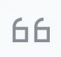
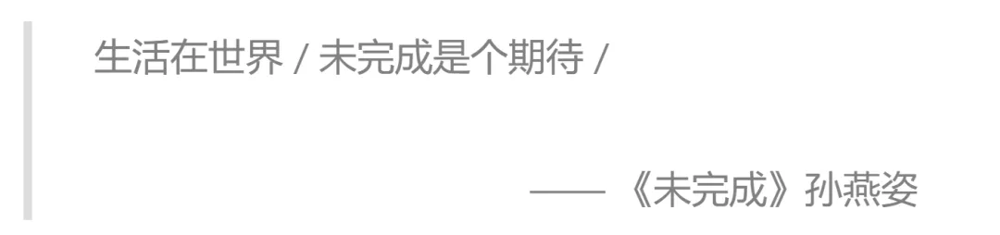
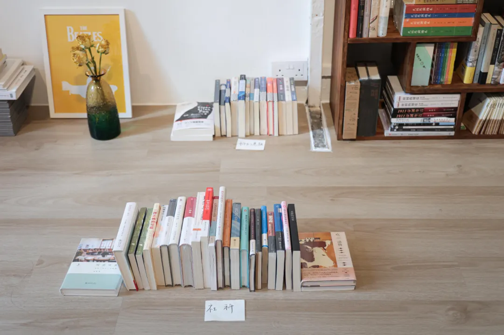

在新加坡熙来攘往的 China Town 牛车水，有一家独立书店，“未完成” 是它的名字。
1月18日 本周六晚上7:30，「未完成书店」组织 AI 时代下的哲学对谈
邀请SeeDAO 联合发起人唐晗 与 華文DAO 发起人胡翌霖教授 与您线下相会，重拾面对面的交流。
在数字化时代，是否会感到活着失去了实感，对认知的真实性产生怀疑？
AI是可以取代生活也取代哲学的么？
AI发展背景下的环境是否破坏了我们个体的“一”性？
延伸：您对海德格尔感兴趣么？
👉 18日晚，愿与同好，觅得共鸣
喜欢看锵锵三人行、圆桌派、岛屿读书的朋友，
无需手机平板，来书店体验近距离的圆桌交流。
三位嘉宾，客观话题，深度碰撞，自我与他人。
🧍♂️ 未完成三人行 与谈嘉宾：
胡翌霖：北京大学科技哲学博士，清华大学科学史系副教授（已离职），TIANYUART艺术工作室创始人，著有《过时的智慧：科学通史十五讲》《媒介史强纲领》《什么是技术》《技术哲学导论》等
唐晗：SeeDAO发起人，数字游民，游吟诗人。曾任36氪记者，关注科技与人文交叉的话题探讨。
小周：未完成NPC
与谈内容：AI时代我们为什么要读哲学 ?
未完成的一个特色是将书本摆在地上（李冠卫摄）
活动地点：未完成书店
活动时间：1月18日 本周六晚上7点30
活动费用：15 SGD
活动报名：请添加 SeeDAO小助手进入新加坡城市群